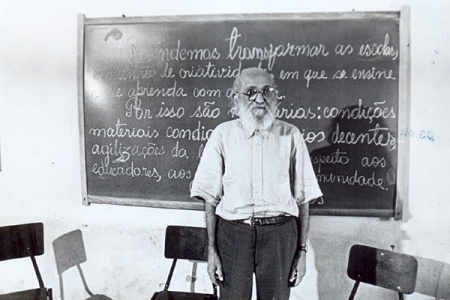
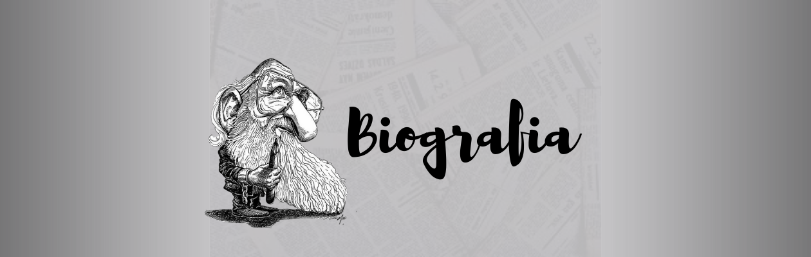
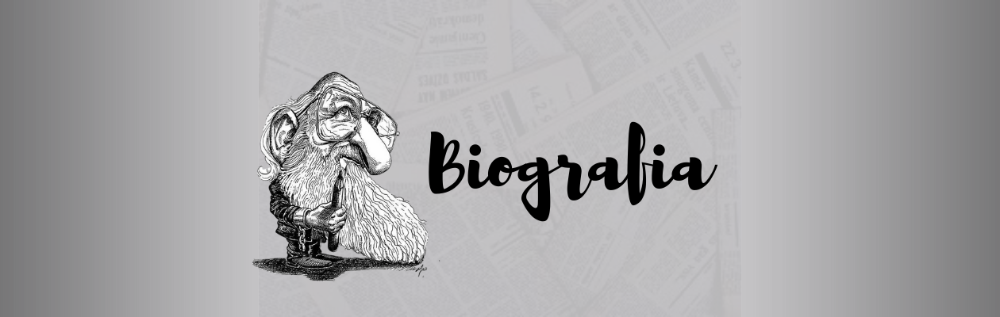

Paulo Freire
Paulo Freire (1921-1997) foi um educador brasileiro, criador de um método inovador para
alfabetização de adultos. Seu método foi levado para diversos países.
Paulo Freire nasceu no Recife, Pernambuco, no dia 19 de setembro de 1921.
Primeiros anos de vida
Filho de Joaquim Temístocles Freire, capitão da Polícia Militar, e de Edeltrudes Neves Freire,
Paulo morou na cidade do Recife até 1931.
Depois desse período foi viver no município vizinho de Jaboatão dos Guararapes,
onde permaneceu durante dez anos.

Formação
Paulo Freire iniciou o curso ginasial no Colégio 14 de Julho, no centro do Recife.
Com 13 anos perdeu o seu pai e coube a sua mãe a responsabilidade de sustentar todos os 4 filhos.
em condições de continuar pagando a escola, sua mãe pediu ajuda ao diretor de Colégio Oswaldo Cruz, que lhe concedeu matrícula gratuita e o
colocou como auxiliar de disciplina. Posteriormente Paulo tornou-se professor da língua portuguesa.
Em 1943 Paulo Freire ingressou na Faculdade de Direito do Recife.
Carreira
Em 1943 Paulo Freire ingressou na Faculdade de Direito do Recife. Depois de formado,
continuou atuando como professor de português no Colégio Oswaldo Cruz e de Filosofia da Educação na
Escola de Belas Artes da Universidade Federal de Pernambuco.
 
